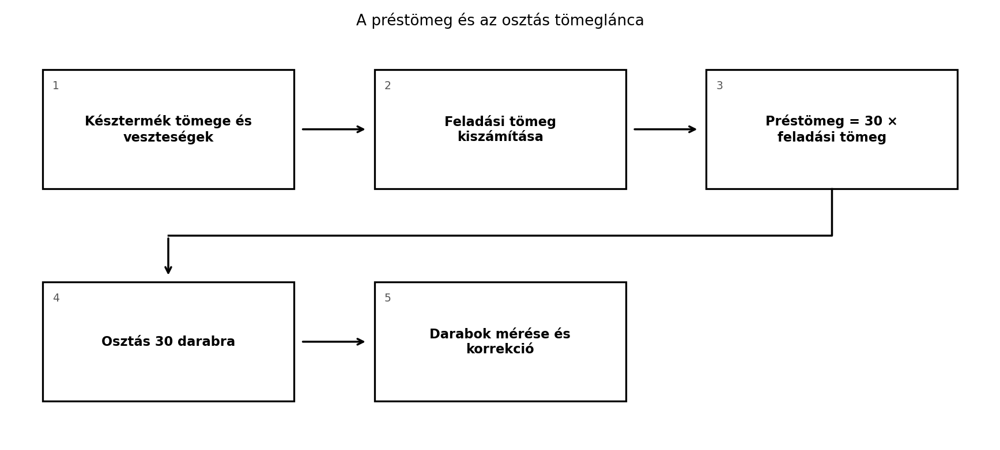

22.2 Feladási tömeg, préstömeg és
osztási számítások
22.2.1 Motiváció
Hajnali műszakban a pék zsemlét gyárt. A technológiai lap szerint a
kész zsemle tömege 50 g, a vevő mégis reklamál, mert a kiszolgált
darabok egy része csak 45 g. A pék leméri a sütőből kikerülő zsemléket,
és azt látja, hogy a tömegük 44–52 g között szóródik. A hiba oka nem a
sütő, hanem az osztás: a préstömeget rosszul állította be, és a
présgépből kikerülő tésztadarabok tömege sem volt egyenletes. Ha a
feladási tömeget és a préstömeget pontosan számítja, és a darabokat
méréssel ellenőrzi, a késztermék tömege a megengedett tűrésen belül
marad.
22.2.2 Szemléletes kép
Az alábbi folyamat mutatja, hogyan épül fel a tömeglánc a késztermék
tömegétől a présgépből kikerülő darabokig:

A préstömeg és az osztás tömeglánca - A
feladási tömegből számítjuk a préstömeget, majd 30 darabra osztunk. A
darabokat méréssel ellenőrizzük.
A lényeg: a késztermék tömege nem egyenlő a nyers tésztadarab
tömegével, mert a kelesztés, sütés és hűlés közben víz párolog el. Ezért
először visszafelé számoljuk a feladási tömeget, abból a préstömeget,
majd az osztás után méréssel győződünk meg arról, hogy a présgép valóban
egyenletesen osztott-e.
22.2.3 Definíciók és szabályok
Definíció. Feladási tömeg
():
az a nyers tésztatömeg, amelyet egy darab termékhez bemérünk, és
amelyből a kelesztés, sütés és hűlés során a késztermék lesz. A feladási
tömeg tehát az osztáskor beállított, osztás utáni egyedi tésztadarab
tömege; az osztás utáni kelesztési (erjedési), a sütési és a hűlési
veszteség a feladási tömegből vonódik le. A dagasztás és az osztás
közötti (tömeges) erjedési veszteséget a Tésztahozam, termékhozam, kihozatal és veszteségek
alfejezet a tésztahozam–feladás kapcsolatnál veszi figyelembe. A
préstömeg nem szinonimája a feladási tömegnek: 30 feladási tömeg (plusz
présmaradék).
Definíció. Préstömeg
():
az a tésztamennyiség, amelyet egyszerre betöltünk az osztógépbe
(présgépbe), és amelyet a gép 30 egyenlő részre oszt. Kézi osztásnál is
beszélhetünk préstömegről: ez az a nagyobb tésztadarab, amelyből 30
egyenlő részt vágunk.
Definíció. Tésztarúd: a présből kikerülő, majd
gömbölyített és hosszúra formázott tésztadarab. A tömegét gyakorlatilag
az osztás határozza meg, mert a formázás közben a tömegváltozás
elhanyagolható, legfeljebb kevés lisztezés rakódik a felületre.
Szabály. A feladási tömeg a késztermék tömegéből és
az összes technológiai veszteségből számítható:
Szabály. Ha a présgép 30 egyenlő részre oszt, és az
osztás során nincs számottevő tészta-maradék, akkor a préstömeg:
Ha a présgépben marad tészta (présmaradék), akkor a betöltött
tésztának ezzel nagyobbnak kell lennie, hogy a 30 darab mégis elérje a
feladási tömeget:
A présmaradékot általában a következő dagasztásba visszadolgozzák,
vagy a tészta össztömegénél veszik figyelembe. A pontos érték a présgép
típusától és állapotától függ.
Szabály. Egy tésztarúd (osztott darab) tömege a
préstömegből:
Ez a tésztarúd tömege akkor, ha a 30 darab egyenlő, és formázáskor a
tömeg nem változik.
Megjegyzés. A 30 egyenlő részre osztás azért
gyakori, mert a hagyományos présgépek egy dugattyúval 30 darabot vágnak
egyszerre. Kézi osztásnál is célszerű a 30-as osztást használni, mert
így nagyobb tételből lehet egyenletes darabokat vágni, és a mérési hibák
jobban átlagolódnak.
22.2.4 Kidolgozott példák
22.2.4.1 1. példa: feladási tömeg
és préstömeg számítása
Adott: 50 g-os kész zsemle, az összes veszteség
(erjedés + sütés + hűlés) 12%. A présgép 30 darabot oszt.
Keresett: feladási tömeg
és préstömeg
.
Megoldás:
A feladási tömeg:
A préstömeg (présmaradék nélkül):
Ellenőrzés: 30 darab × 56,82 g = 1704,6 g, ami
egyezik. Ha a présmaradék például 25 g, akkor a betöltendő tészta
.
22.2.4.2 2. példa: préstömegből
visszaszámolás
Adott: A pék leméri a prést, a tömeg 1740 g. A
présgép 30 darabra osztja, és a présmaradék 18 g.
Keresett: mekkora egy tésztarúd tömege, és mekkora
lesz a késztermék tömege, ha az összes veszteség 10%?
Megoldás:
A hasznos tésztamennyiség a présmaradék levonása után:
Egy tésztarúd tömege:
A késztermék tömege:
Ellenőrzés: A visszaszámolás szerint a késztermék
névleges tömege 51,66 g, ami 50 g helyett kicsit több. Tehát a préstömeg
kismértékű csökkentése indokolt, ha pontosan 50 g-os terméket
akarunk.
22.2.4.3 3. példa: korrekció mérés
után
Adott: A cél feladási tömeg 56,82 g. A présből
kikerülő 30 darabot lemérték, az átlaguk 55,6 g.
Keresett: mennyivel változtassuk meg a préstömeget,
hogy a darabok átlaga elérje a célt?
Megoldás:
A korrekció:
Tehát a következő préstömegnél 36,6 g-mal nagyobb tésztát kell
betölteni.
Ellenőrzés: Ha az új préstömeg
,
és a présmaradék változatlan, akkor a 30 darab átlaga várhatóan 56,82 g
lesz. A számítás iránya helyes: növeltük a préstömeget, mert a mért
darabok kisebbek voltak a célnál.
22.2.5 Valós életbeli
alkalmazás
Eset. Egy kis pékségben a pék hagyományosan „szemre”
vette le a tésztát a dagasztóból, és úgy töltötte a présgépbe, hogy
„nagyjából tele legyen a prés”. A zsemlék kész tömege 47–55 g között
ingadozott, pedig a kiírt tömeg 50 g volt. A hatósági ellenőrzés mintát
vett, és megállapította, hogy a csomagolt termékek átlaga nem éri el a
névleges tömeget (a pontos határérték ellenőrizendő a hatályos előírások
szerint). A pék ezután bevezette a préstömeg-számítást és a méréses
ellenőrzést: minden présből kivett 5 darabot lemért, átlagot számolt, és
a préstömeget az eltérés alapján állította. A zsemlék tömege ezután
49,5–50,8 g közé került, és a reklamációk megszűntek.
Tanulság. A préstömeg nem „érzésből” állítandó be,
hanem a feladási tömegből számítandó. A méréses ellenőrzés rövid idő
alatt kimutatja, ha a présgép egyenletlenül oszt, vagy a tészta sűrűsége
megváltozott.
22.2.6 Gyakorlati útmutató
22.2.6.1 A préstömeg beállítása és
a darabtömeg ellenőrzése
Cél: a présgépből kikerülő tésztadarabok tömege a
feladási tömegnek megfelelő legyen, és a késztermék tömege a megengedett
tűrésen belül maradjon.
Eszközök és anyagok: kész tészta a dagasztóból,
mérleg (0,1 g pontosságú), présgép vagy kézi osztóeszköz, tálcák,
tésztahőmérő, jegyzőkönyv.
Higiénia. A munka megkezdése előtt mosson kezet,
viseljen tiszta munkaruhát, hajhálót; a mérleg tálcája, a présgép
felülete és a tálcák élelmiszer-tiszták legyenek. A tésztát ne tegye
közvetlenül szennyezett felületre. A lehullott tésztadarabokat ne
dolgozza vissza, csak ha az üzemi szabályzat ezt kifejezetten megengedi
(ellenőrizendő: a pékség HACCP-terve).
Gépbiztonság. A présgép kezelése csak betanítás
után, felügyelettel történhet. Üzem előtt ellenőrizze a védőburkolatot,
a reteszelést és a vészleállítót. A présgépbe soha ne nyúljon, amíg a
gép mozog; a tészta betöltése előtt a gép legyen leállítva. A présgép
tisztítása és a maradék eltávolítása csak áramtalanított, újraindítás
ellen biztosított gépen, a forgó részek megállása után végezhető.
Lépések:
Számítsa ki a feladási tömeget. Írja fel a
késztermék tömegét
()
és az összes veszteséget
(),
majd számolja ki
.
Számítsa ki a préstömeget. Szorozza meg a feladási
tömeget 30-cal:
.
Ha a présgépből rendszeresen marad ki tészta, adja hozzá a présmaradék
várható tömegét.
Mérje ki a tésztát. A dagasztóból kivett tésztát
tegye mérlegre, és pontosan állítsa be a kiszámított préstömeget. A
mérés közben a tésztát ne tépje szét, mert a tészta hőmérséklete és
gáztartalma változik.
Töltse a présgépbe, és ossza el. A présgép 30
darabot vágjon. Ügyeljen arra, hogy a préskamra egyenletesen teljen
meg.
Mérje le az első 5–10 darabot. Válassza ki a
présből kikerülő darabok közül az első néhányat, és mérje le egyenként.
Számítsa ki az átlagot.
Hasonlítsa össze a feladási tömeggel. Ha az átlag
eltér a feladási tömegtől, számítsa ki a korrekciót:
.
Korrigálja a préstömeget. A következő présnél a
préstömeget növelje vagy csökkentse a
értékével. A korrekció után ismét mérjen.
Dokumentálja. Jegyezze fel a préstömeget, a mért
darabok tömegét, az átlagot, a korrekciót és a tészta hőmérsékletét. Ez
a HACCP és a nyomonkövethetőség része.
Ellenőrzési pontok:
A mért darabok átlaga a feladási tömeg ±2–3%-án belül legyen
(tanulási példa, a pontos tűrés ellenőrizendő: a pékség technológiai
lapja).
A présgépből kikerülő darabok tömege ne szóródjon: a legkisebb és a
legnagyobb tömeg közötti különbség ne haladja meg a tűrés
kétszeresét.
A présmaradék mennyiségét rendszeresen ellenőrizzük; ha hirtelen
megnő, az a présgép kopására vagy hibás beállítására utal.
Tipikus hibák a gyakorlatban.
A pék a préstömeget nem méri le, csak „megbecsüli” a dagasztóból. A
darabok tömege így tételről tételre változik.
A présgépből kivett darabokat csak egyszer méri, és ha egy darab jó,
nem veszi észre, hogy a többi eltér.
A korrekciót rossz irányban hajtja végre: ha a darabok kisebbek a
célnál, kisebb préstömeget állít be. A helyes irány: kisebb daraboknál
nagyobb préstömeg kell.
22.2.7 Minőségellenőrzés
A préstömeg és az osztás minőségi jellemzői:
Darabtömeg-átlag: a 30 darab átlaga a feladási
tömeg közelében legyen. A megengedett eltérés üzemenként eltér, tanulási
példaként ±2% használható (ellenőrizendő: az üzemi technológiai
lap).
Egyenletesség: a darabok közötti szórás kicsi
legyen. Ha a présgép jól működik, a darabok tömege ±1–1,5%-on belül szór
(ellenőrizendő: a gép gyártói adata).
Késztermék tömeg: a sütés és hűlés után mért tömeg
a névleges tömegnek megfeleljen, a jogszabályi tűrésen belül
(ellenőrizendő: a hatályos fogyasztóvédelmi és élelmiszerjogi
előírások).
Tészta hőmérséklet: az osztáskor a tészta
hőmérséklete a technológiai lapnak megfelelő legyen, mert a meleg, lágy
tészta a présben jobban deformálódik, és a darabok tömege eltérhet.
A mérési eredményeket rögzíteni kell. Ha a darabok átlaga tartósan
eltér, a préstömeget úgy kell módosítani, hogy a késztermék tömege a
névleges értéken belül maradjon.
22.2.8 Tipikus hibák
Hiba 1: a feladási tömeget összekeverik a késztermék
tömegével.
Tünet: a késztermék tömege kisebb a névlegesnél, bár a
préstömeg számítása „pontosnak” tűnt.
Ok: a feladási tömeget a késztermék tömegének vették, nem
számították be a veszteséget.
Javítás/megelőzés: mindig a
képletet használjuk, és a veszteséget a technológiai lapból vegyük.
Hiba 2: a préstömegnél elfelejtik a 30-as
szorzót.
Tünet: a présgépből kikerülő darabok tömege csak törtrésze
(a feladási tömeg 1/30-a) vagy többszöröse a feladási tömegnek; gyakori
változat: a 30 részes présre számolt préstömeget 20 vagy 36 részes
géppel osztják, ezért a darabok 1,5-szer nagyobbak, illetve kb. 17%-kal
kisebbek.
Ok: a pék a feladási tömeget (egy darab tömege) méri be
présként, nem szorozza 30-cal.
Javítás/megelőzés: a számításnál mindig írjuk ki, hogy a
préstömeg 30 darab össztömege, ellenőrizzük a mértékegységeket, és a gép
osztási darabszámát (gépkönyv, adattábla) a számítás előtt.
Hiba 3: a présmaradékot nem veszik figyelembe.
Tünet: a présből kikerülő 30 darab átlaga rendszeresen
kisebb a feladási tömegnél, pedig a préstömeg pontosan 30 × feladási
tömeg.
Ok: a présgépben mindig marad egy kevés tészta, amely nem
kerül a darabokba.
Javítás/megelőzés: mérjük meg a présmaradékot, és a
préstömeget növeljük annak tömegével, vagy a présgép beállítását
ellenőriztessük.
Hiba 4: a darabok mérése nem reprezentatív.
Tünet: a pék a présből csak az első darabot méri, az jó, de
a többi darab tömege eltér.
Ok: a présgép egyenletlenül oszt (kopás, egyenetlen
tésztaeloszlás a présben), és a kiválasztott darab nem jellemzi az egész
prést.
Javítás/megelőzés: legalább 5–10 darabot mérjünk,
számítsunk átlagot és szórást, és ha nagy a szórás, vizsgáltassuk meg a
présgépet.
22.2.9 Önellenőrzés
Igaz vagy hamis? A feladási tömeg mindig nagyobb, mint a késztermék
tömege, ha a veszteségek pozitívak. Indokoljon.
Egy 50 g-os késztermékhez 10% összes veszteséggel mekkora a feladási
tömeg? Számolja ki.
A présgép 30 darabra oszt. A préstömeg 1650 g, a présmaradék 15 g.
Mekkora egy tésztarúd tömege?
Mi a teendő, ha a présből kikerülő 30 darab átlaga 54,5 g, de a cél
56,0 g?
Miért kell a présgép tésztadarabjait mérni, ha a préstömeget
pontosan kiszámítottuk?
Melyik méréssel ellenőrizzük az osztás minőségét: a préstömeg
lemérésével vagy a darabok utólagos mérésével? Élelmiszer-biztonsági
kritikus pont (CCP) ez?
22.2.10 Feladatok
1. feladat (A). Határozza meg a feladási tömeget, ha
a kész zsemle tömege 60 g, az összes veszteség 14%. Mennyi a préstömeg
30 darabhoz, ha nincs présmaradék?
2. feladat (A). A préstömeg 1800 g, a présgép 30
darabra oszt, a présmaradék 20 g. Mekkora egy tésztarúd tömege? Hány
gramm lesz a késztermék, ha az összes veszteség 11%?
3. feladat (B). Egy pékség 45 g-os kiflit gyárt. A
technológiai veszteség erjedésre 2%, sütésre 11%, hűlésre 1%. Számítsa
ki a feladási tömeget és a préstömeget 30 darabhoz. A présmaradékot
becsülje 25 g-ra. Mennyi tésztát kell a présbe tölteni?
4. feladat (B). A pék egy présből kivett 5 darabot
lemért: 58,2 g; 57,8 g; 58,5 g; 57,9 g; 58,1 g. A cél feladási tömeg
58,6 g. Számítsa ki a mért átlagot, a korrekciót a préstömegre, és
döntse el, növelni vagy csökkenteni kell-e a préstömeget.
5. feladat (C). Egy présgépből kikerülő 30 darab
tömege: az első 10 darab átlaga 56,0 g, a következő 10 darab átlaga 57,2
g, az utolsó 10 darab átlaga 55,5 g. A cél feladási tömeg 56,5 g.
Elemezze a szórást: vajon csak a préstömeg beállítása hibás, vagy a
présgép egyenletessége is? Mit tenne?
6. feladat (D). Készítsen ellenőrző táblázatot a
gyakorlati útmutató alapján: egy 30 darabos présből mérje meg az első 10
darab tömegét, írja fel az átlagot, a legkisebb és legnagyobb értéket, a
korrekciós képletet, és határozza meg, milyen dokumentációt kell
kitöltenie. Adjon meg egy példát a kitöltésre.
22.2.11 Megoldások
22.2.11.1 Önellenőrzés –
válaszok
Igaz. A feladási tömeg
,
ahol
,
tehát a nevező kisebb 1-nél, így a hányados nagyobb
-nál.
.
Hasznos tészta:
;
egy tésztarúd:
.
A korrekció:
.
A préstömeget 45 g-mal növelni kell.
Mert a préstömeg pontos kiszámítása nem garantálja, hogy a présgép
egyenletesen oszt, és hogy a présmaradék az előre becsült érték. A mérés
az egyetlen mód a tényleges darabtömeg és a szórás megállapítására.
A darabok mérése mutatja az osztás megfelelőségét (minőségi és
fogyasztóvédelmi ellenőrzés), de nem CCP, mert nem élelmiszer-biztonsági
veszélyt szabályoz. A préstömeg lemérése fontos, de önmagában nem
garantálja a darabok egyenletességét. Az osztásnál HACCP-szempontból az
idegenanyag (gépelem, kopás), az allergén-keresztszennyeződés és a
tésztamaradék kezelése a lényeges.
22.2.11.2 Feladatok megoldása
1. feladat (A).
,
Ellenőrzés: 30 × 69,77 = 2093,1. A feladási tömeg
nagyobb a készterméknél, mert 14% a veszteség.
2. feladat (A).
Hasznos tészta:
Tésztarúd tömege:
Késztermék:
Ellenőrzés: 30 × 59,33 = 1779,9 ≈ 1780, tehát a
présmaradék levonása helyes.
3. feladat (B).
Összes veszteség:
(14%)
Feladási tömeg:
Préstömeg présmaradék nélkül:
Betöltendő tészta présmaradékkal:
Ellenőrzés: A betöltött tészta 30 darabra osztva: 30
× 52,33 = 1569,9; ehhez jön a 25 g présmaradék, ami a gépben marad,
tehát a présbe töltött mennyiség 1594,9 g.
4. feladat (B).
Mért átlag:
Korrekció:
A mért átlag kisebb a célnál, ezért a préstömeget
növelni kell 15 g-mal.
Ellenőrzés: A korrekció pozitív, ami növelést
jelent. Ha a préstömeg 15 g-mal nő, a 30 darab össztömege is 15 g-mal
nő, tehát darabonként 0,5 g-mal, ami pont az eltérés.
5. feladat (C).
A 30 darab összesített átlaga:
A cél 56,5 g, tehát az átlag 0,27 g-mal kisebb. A korrekció:
növelés.
A szórás viszont nagy: az első harmad 56,0 g, a második 57,2 g, a
harmadik 55,5 g. A különbség a legnagyobb és legkisebb átlag között 1,7
g. Ez arra utal, hogy a présgép nem egyenletesen oszt, nem csak a
préstömeg beállításával van baj.
Teendő: először a préstömeget be lehet állítani a korrekcióval, de
ha a szórás továbbra is nagy, a présgépet meg kell vizsgáltatni (kopott
alkatrész, tésztaadagolási probléma), és addig kézi szelektálással vagy
gyakoribb méréssel kell dolgozni.
6. feladat (D).
A gyakorlati útmutató szerinti ellenőrző táblázat oszlopai:
Sorszám | Mért darabtömeg (g) | Eltérés a céltól
(g) | Megjegyzés. A 30 darabos présből az első 10 darabot
lemérjük, felírjuk az értékeket. Példa:
Sorszám
Mért darabtömeg (g)
Eltérés a céltól (g)
Megjegyzés
1
56,2
−0,6
2
56,8
+0,0
3
56,5
−0,3
4
56,0
−0,8
5
56,9
+0,1
6
56,3
−0,5
7
56,6
−0,2
8
56,1
−0,7
9
56,7
−0,1
10
56,4
−0,4
A cél feladási tömeg 56,8 g. A mért átlag 56,45 g. A korrekció:
növelés. A dokumentációban rögzíteni kell: dátum, termék, tészta
hőmérséklete, préstömeg, mért darabok, átlag, korrekció, a présgép
azonosítója, a mérést végző aláírása.
22.2.12 Rövid összefoglaló
A feladási tömeg az a nyers tésztatömeg, amelyből a késztermék a
technológiai veszteségek (erjedés, sütés, hűlés) után kialakul.
Kiszámítása:
.
A préstömeg az a tészta, amelyet a présgépbe teszünk, és amelyet 30
egyenlő részre oszt. Préstömeg présmaradék nélkül:
;
ha présmaradék van, azt hozzáadjuk. Egy tésztarúd tömege:
.
A darabok tömegét méréssel ellenőrizzük, mert a présgép egyenletlenül is
oszthat. Ha a mért átlag eltér a feladási tömegtől, a korrekció:
.
A préstömeget a korrekciónak megfelelően növelni vagy csökkenteni kell.
A tűrés üzemenként eltérő, tanulási példaként ±2–3% használható
(ellenőrizendő: a pékség technológiai lapja). A mérési eredményeket
dokumentálni kell, mert a termék tömege fogyasztóvédelmi és minőségügyi
szempontból kiemelten fontos. Ezt a számítást használjuk a kézi
feldolgozásnál és a péksüteményeknél (Alakító
műveletek és a pihentetés, Kézi osztás,
gömbölyítés és hosszformázás, Péksütemények
feldolgozása, kelesztése és sütése a gyakorlatban), valamint a
tömegellenőrzésnél (Tömegellenőrzés és
töltelékhányad).
22.2.13 Források és ellenőrzési
hiányok
A tömegtűrésre és a csomagolt termékek tömegére vonatkozó hatályos
magyar és uniós előírás: ellenőrizendő (pl. fogyasztóvédelmi rendeletek,
Magyar Élelmiszerkönyv sütőipari termékekre vonatkozó irányelve).
A présgép 30 részre osztásának jellemzője és a présmaradék mértéke:
ellenőrizendő a konkrét gép gyártói adatlapja alapján.
A veszteségszázalékok és a darabtömeg-tűrés tanulási példák:
ellenőrizendő a pékség technológiai lapja, HACCP-terve és a hatósági
útmutató szerint.